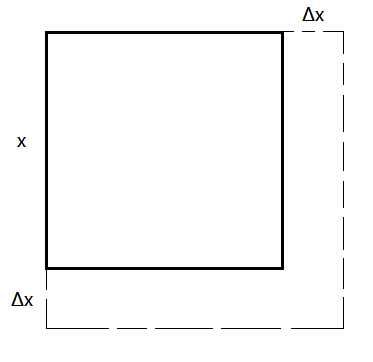
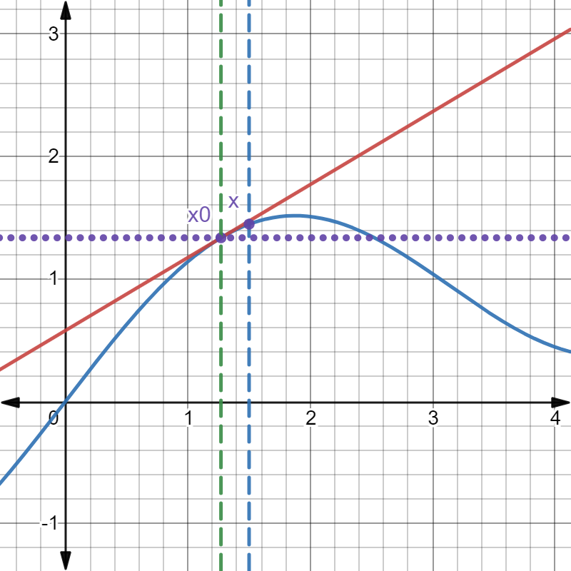

§2.5 函数的微分
引例

S(x)=x2
S(x+Δx)=(x+Δx)2=x2+2x⋅Δx+(Δx)2
ΔS=S(x+Δx)−S(x)=线性（函数）部分2x⋅Δx+高阶无穷小量(Δx→0)(Δx)2∼2x⋅Δx→0
y=x3
Δy=y(x+Δx)−y(x)=(x+Δx)3−x3=线性部分3x2⋅Δx+o(Δx)(Δx→0)3x(Δx)2+(Δx)3
一、函数的微分
- 定义：y=f(x) 在 U(x) 有定义，若 Δy=f(x+Δx)−f(x)=A⋅Δx+o(Δx)（A 与 Δx 无关），则 y=f(x) 在 x 处可微，称 A⋅Δx 为 y=f(x) 的微分，记作 dy=A⋅Δx=A⋅dx
如 S=x2，dS=2x⋅Δx=2xdx
如 y=x3，dy=3x2⋅Δx=3x2dx
- 定理：函数在一点可微 ⇔ 函数在一点可导，且 dy=f′(x)dx
证明：
⇒：Δy=A⋅Δx+o(Δx)
ΔxΔy=A+Δxo(Δx)
f′(x)=Δx→0limΔxΔy=A+0=Ady=Adx=f′(x)dx
⇐：f′(x)=Δx→0limΔxΔyΔxΔy=f′(x)+α
Δy=f′(x)Δx+αΔx=线性部分f′(x)Δx+高阶无穷小o(Δx)
例题
- y=arctanx，dy=1+x21dx，dy∣x=0=1dx
- y=x2ex，dy=(2xex+x2ex)dx
二、微分的运算法则
与导数运算法则类似
- u,v 均可微：
- d(u±v)=du±dv
- d(uv)=v⋅du+u⋅dv
- d(vu)=v2v⋅du−u⋅dv
- 一阶微分的形式不变性（设 y=f(u),u=ϕ(x) 均可导）
d{f[ϕ(x)]}=dxdf[ϕ(x)]⋅dx=f′(u)ϕ′dx=f′(u)du
高阶微分
dy=f′(x)dx⇒dny=f(n)xdxn
例题
-
y=sin(x2⋅ex)，求 dy
dy=cos(x2ex)d(x2ex)=cos(x2ex)[d(x2)⋅ex+x2d(ex)]=[cos(x2ex)⋅(2xex+x2ex)]dx
-
y=ln(1+ex2)，求 dy
dy=1+ex21⋅ex2⋅2xdx=1+ex22xex2dx
或
dy=1+ex21d(1+ex2)=1+ex22xex2dx
- ey+xy−e=0，求 dy
求导法
ey⋅y′+y+xy′−0=0⇒y′=−x+eyydy=−x+eyydx
微分法：两边微分得
eydy+ydx+xdyd(xy)−0dy=0=−x+eyydx
- d(sinx)d(tanx)=cosxdxcos2x1dx=cos3x1
三、微分的几何意义
Δy=f(x)f(x0+Δx)−f(x0)≈f′(x0)⋅Δxf′(x0)(x−x0)=dy∣x=x0
- y=f(x) 在 x0 处切线方程 y−f(x0)=f′(x0)(x−x0)

以直代曲要求
- x−x0→0
- f(x0),f′(x0) 可计算且相对容易
例题
- 求 sin31∘ 的近似值
解：y=sinxx∈R
f(x)≈f(x0)+f′(x0)(x−x0)=sinx0+cosx0(x−x0)
sin31∘≈sin30∘+cos30∘⋅180π≈0.5+21.732⋅180π
- 求 (34)51 的近似值
解：y=x51
3451≈3251+51×32−54(34−32)=2+51×161×2=2+401=2.025